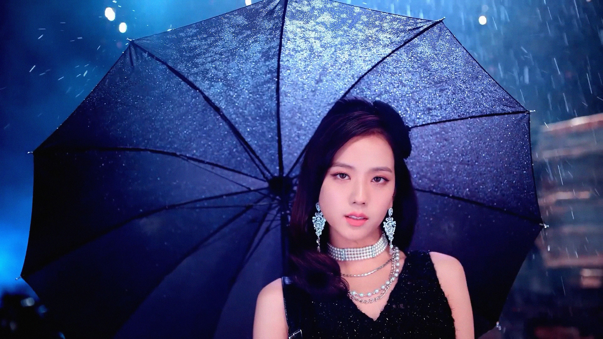

Nombre: ?? / Ji Soo
Nombre completo: ??? / Kim Ji Soo
Profesi�n: Cantante, Actriz, Modelo, Bailarina y MC.
Fecha de nacimiento: 03-Enero-1995 (26 A�os)
Lugar de nacimiento: Se�l, Corea Del Sur.
Estatura: 162 cm
Peso: 45 kg
Tipo de sangre: A
Signo zodiacal: Capricornio
Signo zodiacal chino: Perro
Familia: Padres, hermano mayor y hermana mayor.
Agencia: YG Entertainment
Biograf�a
Ji Soo fue confirmada como la tercera miembro de BLACKPINK el 15 de Junio del 2016. Antes de su debut, hab�a aparecido en varios videoclips de artistas de su misma agencia, adem�s de modelar para varias marcas y hacer un cameo en The Producers.
En enero del 2017, Ji Soo fue confirmada como MC de Inkigayo, junto a Jin Young de GOT7 y Do Young de NCT. Es el primer trabajo de Ji Soo como MC de un programa musical. Finaliz� su ciclo como MC el d�a 4 de febrero de 2018.
Dramas
Snowdrop (jTBC, 2021)
Arthdal Chronicles (tvN, 2019)
YG Future Strategy Office (Netflix, 2018) Cameo
Temporary Idols (Netflix/SBS, 2017-2018) Cameo
The Producers (KBS2, 2015) Cameo Ep. 4, 5 y 12
Pel�culas
BLACKPINK: Light Up The Sky (2020) Documental
Blackpink: The Movie (2021)
Programas de TV
(tvN) Amazing Saturday (2020, Junto a Ros�)
(SBS) Delicious Rendezvous (2020)
(tvN) Amazing saturday (2018, Junto a Ros�)
(SBS) Running Man (2018, Junto a Jennie)
(MBC) Unexpected Q (2018)
(OnStyle) Get It Beauty (27.12.2017)
(tvN) Wednesday Food Talk (22.08.2017)
(MBC) King Of Masked Singer (30.07.2017)
(MBC) Radio Star (2017, Junto a Ros�)
(SBS) Inkigayo (05.02.2017 - 04.02.2018, MC)
(Mnet) M! Countdown (10.11.2016, MC especial, Junto a Jennie)
(SBS) Inkigayo (04.09.2016, MC especial)
Anuncios
Dior (2020-2021)
Moonshot (2017) junto a Ros�
LG Stylus 2 (2016) junto a iKON
Smart Uniform (2016) junto a iKON
Angel Stone (2015)
Nikon (2015)
Samsonite Red (2014) junto a Lee Min Ho
Composiciones
BLACKPINK - Lovesick Girls (2020)
BLACKPINK - Stay (2016)
V�deos Musicales
HI SUHYUN feat. Bobby - I'm Different (2014)
Epik High - Spoiler (2014)
Epik High - Happen Ending (2014)
Curiosidades
Grupo K-Pop: BLACKPINK
Posici�n: Vocalista y Bailarina
Tipo de voz: Mezzosoprano
Per�odo de entrenamiento: 5 a�os.
Idiomas: Coreano (lengua materna), Japon�s (medio) e Ingl�s (medio).
Mascotas: Un perro llamado Kim Dalgom.
Color favorito: Morado y azul.
Modelo a seguir: G-Dragon.
Apodos: JiChu, Chicken, Mc Choo, ChiChoo, Water Bottle, Jishade, Jishook
Hobbies: Leer, jugar videojuegos, tomar fotograf�as, escribir y dibujar.
Instrumentos: Piano y tambor.
Audicion� para YG Entertainment con la canci�n "The Two Of Us" de Lee Eun Mi.
Practic� taekwondo de peque�a pero no quer�a ser un rango m�s alto que cintur�n blanco, as� que falt� a la ceremonia de cambio de rango y dej� de ir.
Fue modelo de marcas antes de su debut.
Estuvo en la banda de percusi�n tradicional en la escuela media tocando el tambor.
Desde sus d�as de trainee, cada vez que practicaba se lesionaba los tobillos y ten�a que ir al hospital.
La famosa lista mundial Business of Fashion 500 ha creado una nueva lista de Model & Muse, donde se incluyen aquellos personajes que se puede decir que han marcado historia en la industria de la moda. De esta forma, ha sido una maravillosa sorpresa poder ver a Ji Soo en esta lista.
En el a�o 2019, en la p�gina oficial de TC Candler, Ji Soo apareci� en "The 100 most beautiful faces of 2019" quedando en el puesto #78.
En el 2020 Ji Soo fue modelo de la revista BAZAAR, promocionando productos de la marca "Dior Forever".
Apareci� por segunda vez en la lista de TC Candler "The 100 most beautiful faces of 2020" quedando en el puesto #50.